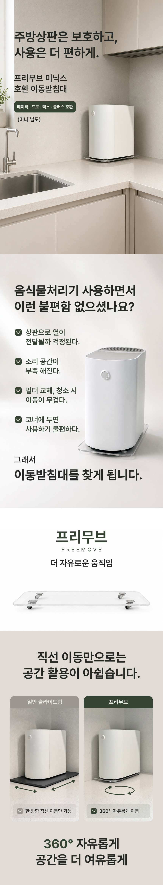
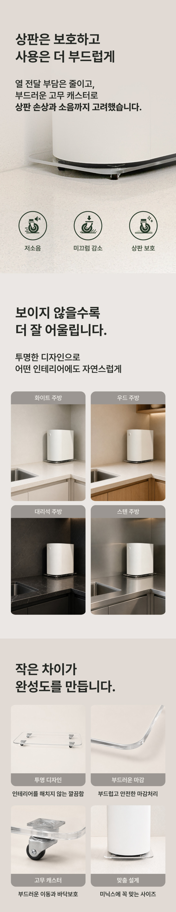

이 포스팅은 네이버 쇼핑 커넥트 활동의 일환으로, 판매 발생 시 수수료를 제공받습니다.
프리무브 미닉스 이동받침대, 음식물처리기 자리와 청소를 편하게
주방 가전 아래를 닦으려고 할 때 본체를 옮기는 일이 은근 번거롭죠. 음식물처리기를 놓을 자리가 좁거나 청소할 때 움직여야 한다면 이동받침대가 눈에 들어와요.
프리무브 미닉스 호환 360도 이동받침대의 10월 6일 표시 가격은 23,900원이에요. 음식물처리기 본체가 아니라 아래에 놓는 받침대 상품이에요.
💚 프리무브 이동받침대 가격·모양 보기(웃는 스티커)
1. 360도 이동

판매자 제공 상품사진 · 구성 및 옵션 예시 · 클릭하면 원본 사진이 제품은 바퀴로 방향을 바꾸며 이동하는 360도 받침대예요. 본체를 매번 들어 올리는 대신 위치를 바꿔 사용하고 싶은 분에게 용도가 분명하죠.
가전을 앞으로 꺼낼 때와 옆으로 움직여 주변을 닦을 때를 함께 떠올려보세요. 음식물을 넣는 과정과 청소 동선을 정리하고 싶다면 살펴볼 이유가 있어요.
(매일 손이 가는 가전은 주변 청소도 자주 하게 되니까요.)
2. 투명한 디자인

판매자 제공 상품사진 · 구성 및 옵션 예시 · 클릭하면 원본 사진판매 상세에는 투명한 상판과 고무 캐스터가 소개되어 있어요. 받침대의 존재감을 크게 늘리지 않고 가전 아래에 두는 디자인을 선호하는 분이 눈여겨볼 부분이에요.
주방 상판 위에 놓는 모습을 사진으로 살펴보세요. 가전이 있는 자리를 유지하면서 이동성을 더하는 소품으로 생각하면 제품 역할이 쉽게 보이죠.
💚 실제 설치 모습·바퀴 구조 살펴보기3. 호환 사이즈
판매자 제공 상품사진 · 구성 및 옵션 예시 · 클릭하면 원본 사진판매 안내에는 기본 사이즈의 미닉스 베이직·프로·맥스·플러스 호환과 미니 별도 구분이 나와 있어요. 쓰는 모델에 맞는 받침대를 고르면 돼요.
아래에서 현재 호환 모델과 치수를 확인해보세요. 음식물처리기를 작동할 때 필요한 공간은 본체 사용 안내에 맞춰 확보하고, 받침대는 그 자리를 편하게 정리하는 용도로 활용하면 좋아요.
💚 프리무브 미닉스 호환 모델·사이즈 보기#프리무브 #미닉스받침대 #음식물처리기이동받침대 #주방청소